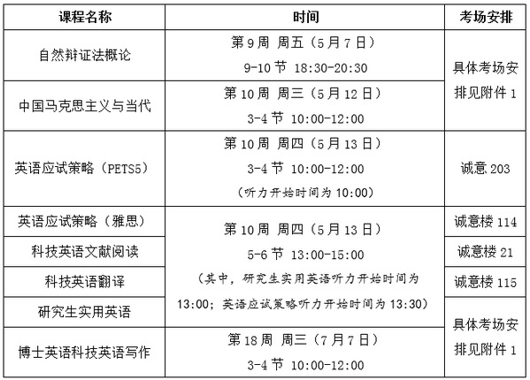

当前位置：
当前位置：根据本学期教学计划安排，从5月7日起研究生课程进入考试阶段。为加强考务管理，保持良好考风，现将考试有关事项通知如下：
公共学位课的考试由拉曼大学统一组织，期中考试课程具体安排详见下表。

注意事项：
1. “英语应试策略（PETS5）”“英语应试策略（雅思）”“研究生实用英语”考试内容含听力，请学生自备调频接收机（注意要准备能接收到相应频率的接收机），接收频率为FM74.3兆赫，请考生自带铅笔、橡皮、碳素笔等，客观题部分用铅笔填涂选项，并涂出一定的宽度，主观题部分用碳素笔等做答。
2. “自然辩证法概论”、“中国马克思主义与当代”考试为开卷考试，考生可携带并查阅纸版参考资料，严禁在考试过程中翻看手机、平板电脑、笔记本电脑等带有存储或通讯功能的电子设备。
3. 考生须提前15分钟到达考场，须按照考场安排到指定的考场参加考试，不允许私自串考场，乱串教室者考试成绩无效，未安排考场的同学请考前联系拉曼大学培养办，另行安排考场。考试开始15分钟后不准进入考场，考试开始30分钟后方可交卷离开考场。
4. 考生须携带研究生证或学生卡进入考场，将证件放在桌角，接受监考教师的检查。如证件丢失，须出示所在学院出具的身份证明和本人身份证。
5. 考生到达考场后，至少间隔两列坐开，前后对齐。
6. 考生须遵守考试纪律，对考试违纪或作弊者，将依据《大学学生考试纪律及考试违纪处分管理办法》给予处分（在职人员取消学习资格并不退学费）。
7. 重修、缓考的学生参加考试时，须在考试答题册右上角位置标明“重修”或“缓考”，以便于任课教师记载考试成绩。
8. 因病不能参加考试者，需在考试前提交《大学研究生缓考申请表》（附件4）并附医院诊断。
学院管理课程的考试由有关学院负责安排，原则上应于课程结束后一周内进行。任课教师须严格按照《关于研究生任课教师及课程教学的相关规定》（研院发[2019]47号）和教学大纲的要求，认真组织考试、考查工作，公平、公正地评阅试卷。由任课教师担任主考，一般每30名学生安排一名监考教师，监考教师须选派本学院教师。主、监考教师应提前15分钟到达考场，主、监考教师要履行职责，认真执行考场纪律，监考教师须协助主考教师查验证件、发收试卷、清点人数等，主考教师填写《考场情况记事表》（附件2），出现违纪等特殊情况时，监考教师要认真履行职责，当场填写《大学学生考试违纪登记表》（附件3），并要求学生确认事实和签字。考试结束后及时将相关材料送到拉曼大学培养办，由学院和拉曼大学按学校有关规定进行处理。对在监考过程中不负责任、监督乏力或对学生违纪行为不予制止的主、监考教师，学校将进行通报批评并视情况轻重给予相应处分。
考试是教学过程的重要环节和保证教学质量的重要措施，关系到研究生教育的有效实施。为严格考试管理，严肃考风考纪，弘扬哈工大“规格严格、功夫到家”的优良传统，请各学院认真组织召开学生考风建设动员会，对学生进行考试违纪与作弊的认定及处理的宣传教育，把学风、考纪教育作为思想政治工作的重要内容，通过考试纪律的宣传、学习和典型事例的警示，教育学生要以诚实的态度对待考试，以真实的成绩证明自己，在考试过程中培养诚实、守信、遵纪、守法的品德和作风。
如有问题，请来电咨询。 联系人：张老师 联系电话：86413771
大学拉曼大学培养处
2021年4月12日
附件：
 附件4.研究生缓考申请表 Application Form of Delayed Examination for Postgraduate Students（中英）.doc
附件4.研究生缓考申请表 Application Form of Delayed Examination for Postgraduate Students（中英）.doc